8.1 FIR Filter Design: Format, Fourier Design, and Windows
Digital Signal Processing
Imron Rosyadi
Learning Objectives
By the end of this session, you should be able to:
- Write and interpret the FIR filter difference equation, transfer function, and impulse response.
- Explain why FIR filters are always BIBO stable and how their structure leads to linear phase.
- Use the Fourier transform design method to derive ideal lowpass (and other) FIR impulse responses.
- Understand the Gibbs effect and why simple truncation causes ripples in the passband/stopband.
- Explain how window functions (rectangular, Hanning, Hamming, Blackman, etc.) modify FIR characteristics.
- Estimate FIR length from specs (ripple, attenuation, transition width) and pick an appropriate window.
- Connect FIR filter design to real-world ECE examples (e.g., audio, speech, communication systems).
7.1 FIR Filter Format – Difference Equation
A length-\((K+1)\) FIR filter is defined by the input-output relation
\[ \begin{aligned} y(n) &= \sum_{i=0}^{K} b_i\, x(n-i) \\ &= b_0 x(n) + b_1 x(n-1) + \cdots + b_K x(n-K). \end{aligned} \]
- \(b_i\): FIR filter coefficients.
- \(K+1\): number of taps (filter length).
ECE view:
- This is just a weighted moving sum of current and past samples.
- Common in audio EQs, channel equalizers, anti-aliasing filters, etc.
7.1 FIR Filter Format – Z-Domain and Transfer Function
Apply the \(z\)-transform to the difference equation:
\[ Y(z) = \sum_{i=0}^{K} b_i z^{-i} X(z). \]
Factor out \(X(z)\) and divide:
\[ H(z) = \frac{Y(z)}{X(z)} = b_0 + b_1 z^{-1} + \cdots + b_K z^{-K}. \]
Key structural properties:
- Numerator only, no denominator (other than 1).
- All poles are at the origin \(z = 0\) (or equivalently, there is only a zero-order denominator).
- Impulse response \(h(n)\) has only \(K+1\) nonzero samples → finite impulse response.
Example 7.1 – Reading FIR Format from an Equation
Given
\[ y(n) = 0.1 x(n) + 0.25 x(n-1) + 0.2 x(n-2), \]
determine:
- Transfer function \(H(z)\)
- Filter length
- Coefficients \(b_i\)
- Impulse response \(h(n)\)
Solution:
Z-transform:
\[ Y(z) = 0.1 X(z) + 0.25 z^{-1} X(z) + 0.2 z^{-2} X(z). \]
Transfer function:
\[ H(z) = \frac{Y(z)}{X(z)} = 0.1 + 0.25 z^{-1} + 0.2 z^{-2}. \]
Filter length:
- There are 3 taps ⇒ \(K+1 = 3 \Rightarrow K = 2\).
Coefficients:
- \(b_0 = 0.1,\; b_1 = 0.25,\; b_2 = 0.2\).
Impulse response (inverse \(z\)-transform):
\[ h(n) = 0.1 \delta(n) + 0.25 \delta(n-1) + 0.2 \delta(n-2). \]
FIR Filters – Why They’re Attractive
From Example 7.1 and the general form, we can say:
- Stability:
- \(H(z) = b_0 + b_1 z^{-1} + \cdots + b_K z^{-K}\)
- All poles at the origin.
- Finite-length impulse response ⇒ always BIBO stable.
- Implementation:
- Only involves multiplies and adds on the input samples.
- Easy to implement in hardware (FIR “tap delay line”) or software (convolution).
- Linear phase (if symmetric coefficients):
- If \(b_n\) are symmetric, then phase is (approximately) linear ⇒ no waveform distortion in passband.
Real-world ECE uses:
- Audio equalizers, crossover networks (linear phase is important).
- Baseband pulse shaping and matched filters in digital communication.
- Anti-aliasing / reconstruction filters when constraints on phase are tight.
Tip
For many audio and communication applications, FIR is preferred even when it’s more expensive computationally, because of predictable phase and unconditional stability.
Visual: FIR Filter as a Tap Delay Line
7.2 Fourier Transform Design – Starting from an Ideal Filter
We begin with an ideal lowpass filter with normalized cutoff frequency \(\Omega_c\). Its ideal frequency response is:
\[ H(e^{j\Omega}) = \begin{cases} 1, & 0 \le |\Omega| \le \Omega_c, \\ 0, & \Omega_c \le |\Omega| \le \pi. \end{cases} \]
- \(\Omega\) is the normalized digital frequency in radians/sample.
- This is a brick-wall (perfect) lowpass filter on the unit circle.
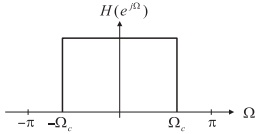
Ideal Lowpass – Periodic Extension
Because \(H(e^{j\Omega})\) is \(2\pi\)-periodic, we can extend it beyond \(-\pi\) to \(\pi\):
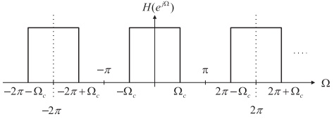
Idea:
- View \(H(e^{j\Omega})\) as a periodic function of \(\Omega\).
- Then express it as a Fourier series in \(\Omega\).
- The Fourier series coefficients in \(\Omega\)-domain will turn out to be the impulse response \(h(n)\).
Frequency-Domain Fourier Series Representation
Write the periodic spectrum as a complex Fourier series in \(\Omega\):
\[ H(e^{j\Omega}) = \sum_{n=-\infty}^{\infty} c_n e^{-j \omega_0 n \Omega}. \]
Fourier series coefficients:
\[ c_n = \frac{1}{2\pi} \int_{-\pi}^{\pi} H(e^{j\Omega}) e^{j \omega_0 n \Omega} \, d\Omega. \]
For our case, the period is \(2\pi\), so:
\[ \omega_0 = \frac{2\pi}{2\pi} = 1. \]
So the series simplifies to:
\[ H(e^{j\Omega}) = \sum_{n=-\infty}^{\infty} c_n e^{-j n \Omega}. \]
Define \(h(n) = c_n\) ⇒
\[ H(e^{j\Omega}) = \sum_{n=-\infty}^{\infty} h(n) e^{-j n \Omega}. \]
and the corresponding “inverse” formula:
\[ h(n) = \frac{1}{2\pi} \int_{-\pi}^{\pi} H(e^{j\Omega}) e^{j n \Omega} \, d\Omega. \]
Note
This is just the DTFT pair: - \(H(e^{j\Omega}) \leftrightarrow h(n)\). - Except here, we are thinking of using it as a design formula to derive the ideal impulse response from the desired magnitude response.
Ideal Lowpass – Desired (Infinite) Impulse Response
Apply the formula
\[ h(n) = \frac{1}{2\pi} \int_{-\pi}^{\pi} H(e^{j\Omega}) e^{j n \Omega} \, d\Omega \]
with \(H(e^{j\Omega}) = 1\) for \(|\Omega|\le \Omega_c\) and 0 otherwise.
For \(n = 0\):
\[ \begin{aligned} h(0) &= \frac{1}{2\pi} \int_{-\pi}^{\pi} H(e^{j\Omega})\, d\Omega \\ &= \frac{1}{2\pi} \int_{-\Omega_c}^{\Omega_c} 1 \, d\Omega \\ &= \frac{\Omega_c}{\pi}. \end{aligned} \]
For \(n \ne 0\):
\[ \begin{aligned} h(n) &= \frac{1}{2\pi} \int_{-\Omega_c}^{\Omega_c} e^{j n \Omega} \, d\Omega \\ &= \frac{1}{2\pi} \left[ \frac{e^{j n \Omega}}{j n} \right]_{-\Omega_c}^{\Omega_c} \\ &= \frac{1}{\pi n} \cdot \frac{e^{j n \Omega_c} - e^{-j n \Omega_c}}{2j} \\ &= \frac{\sin(\Omega_c n)}{\pi n}. \end{aligned} \]
So the ideal lowpass impulse response is:
\[ h(n) = \begin{cases} \dfrac{\Omega_c}{\pi}, & n = 0, \\ \dfrac{\sin(\Omega_c n)}{\pi n}, & n \neq 0. \end{cases} \]
Ideal Lowpass Impulse Response Shape
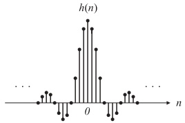
Observations:
- \(h(n)\) is infinite-length (exists for all integer \(n\)).
- Symmetric around \(n = 0\): \(h(n) = h(-n)\).
- Amplitude decays roughly like \(1/|n|\).
This is essentially a discrete-time sinc function:
\[ h(n) \propto \frac{\sin(\Omega_c n)}{n}. \]
From Ideal Infinite Impulse Response to FIR
The ideal impulse response is noncausal and infinite:
\[ H(z) = \sum_{n=-\infty}^{\infty} h(n) z^{-n} = \cdots + h(-2) z^{2} + h(-1) z^{1} + h(0) + h(1) z^{-1} + \cdots \]
Problems:
- Infinite number of taps → impossible to implement exactly.
- Contains positive powers of \(z\) ⇒ noncausal (depends on future inputs).
Practical FIR design steps:
Truncate \(h(n)\) to a finite index range \(-M \le n \le M\).
Use symmetry \(h(n) = h(-n)\) to form:
\[ H(z) = h(M) z^{M} + \cdots + h(1) z^{1} + h(0) + h(1) z^{-1} + \cdots + h(M) z^{-M}. \]
Shift by \(M\) samples to make it causal:
Define \(b_n = h(n - M)\), for \(n = 0,1,\dots,2M\).
Then
\[ H(z) = b_0 + b_1 z^{-1} + \cdots + b_{2M} z^{-2M}. \]
Important
Truncation + shift = basic FIR design by Fourier method.
But: abrupt truncation ⇒ Gibbs effect (ripples in passband and stopband). The window method is our fix.
Summary Table for Ideal FIR Impulse Responses
Table 7.1 (noncausal ideal coefficients \(h(n)\), \(-M \le n \le M\)):
| Filter Type | Ideal Impulse Response \(h(n)\) |
|---|---|
| Lowpass | \(h(0) = \dfrac{\Omega_c}{\pi}\) and \(h(n) = \dfrac{\sin(\Omega_c n)}{n\pi},\; n\neq 0\) |
| Highpass | \(h(0) = \dfrac{\pi - \Omega_c}{\pi}\) and \(h(n) = -\dfrac{\sin(\Omega_c n)}{n\pi},\; n\neq 0\) |
| Bandpass | \(h(0) = \dfrac{\Omega_H - \Omega_L}{\pi}\) and \(h(n) = \dfrac{\sin(\Omega_H n)}{n\pi} - \dfrac{\sin(\Omega_L n)}{n\pi},\; n\neq 0\) |
| Bandstop | \(h(0) = \dfrac{\pi - \Omega_H + \Omega_L}{\pi}\) and \(h(n) = -\dfrac{\sin(\Omega_H n)}{n\pi} + \dfrac{\sin(\Omega_L n)}{n\pi},\; n\neq 0\) |
Then make it causal by shifting: \(b_n = h(n-M)\).
Example 7.2 – 3-Tap Lowpass by Fourier Design
Goal: Design a 3-tap (\(2M+1=3\) ⇒ \(M=1\)) lowpass FIR with:
- \(f_c = 800\) Hz, \(f_s = 8000\) Hz.
(a) Coefficients via Fourier method
Normalized cutoff:
\[ \Omega_c = 2\pi \frac{f_c}{f_s} = 2\pi \frac{800}{8000} = 0.2\pi \; \text{rad}. \]
From the lowpass formula:
\[ h(0) = \frac{\Omega_c}{\pi} = 0.2, \quad h(1) = \frac{\sin(0.2\pi)}{\pi} \approx 0.1871, \quad h(-1) = h(1) = 0.1871. \]
Shift by \(M=1\) to get causal coefficients:
\[ \begin{aligned} b_0 &= h(-1) = 0.1871, \\ b_1 &= h(0) = 0.2, \\ b_2 &= h(1) = 0.1871. \end{aligned} \]
Example 7.2 – Transfer Function and Difference Equation
- Transfer function:
\[ H(z) = 0.1871 + 0.2 z^{-1} + 0.1871 z^{-2}. \]
Difference equation (inverse \(z\)-transform):
\[ y(n) = 0.1871 x(n) + 0.2 x(n-1) + 0.1871 x(n-2). \]
This is a symmetric 3-tap FIR lowpass filter.
Example 7.2 – Frequency Response and Linear Phase
- Substitute \(z = e^{j\Omega}\):
\[ H(e^{j\Omega}) = 0.1871 + 0.2 e^{-j\Omega} + 0.1871 e^{-j2\Omega}. \]
Factor \(e^{-j\Omega}\):
\[ \begin{aligned} H(e^{j\Omega}) &= e^{-j\Omega} \left( 0.1871 e^{j\Omega} + 0.2 + 0.1871 e^{-j\Omega} \right) \\ &= e^{-j\Omega} \left( 0.2 + 0.3742 \cos\Omega \right). \end{aligned} \]
Magnitude and phase:
\[ |H(e^{j\Omega})| = \big|0.2 + 0.3742 \cos\Omega\big|, \]
\[ \angle H(e^{j\Omega}) = \begin{cases} -\Omega, & 0.2 + 0.3742 \cos\Omega > 0, \\ -\Omega + \pi, & 0.2 + 0.3742 \cos\Omega < 0. \end{cases} \]
- Main slope of phase: \(-\Omega\) ⇒ linear phase with delay \(M=1\).
- Occasional \(\pi\) jumps when term in parentheses changes sign (sawtooth pattern).
Tip
For an FIR with symmetric coefficients and odd length \(2M+1\):
\[ \angle H(e^{j\Omega}) \approx -M \Omega \quad (\text{plus possible }180^\circ \text{ jumps}). \]
⇒ Constant group delay \(M\) samples for all passband frequencies.
Visual: 3-Tap vs 17-Tap Lowpass Filters
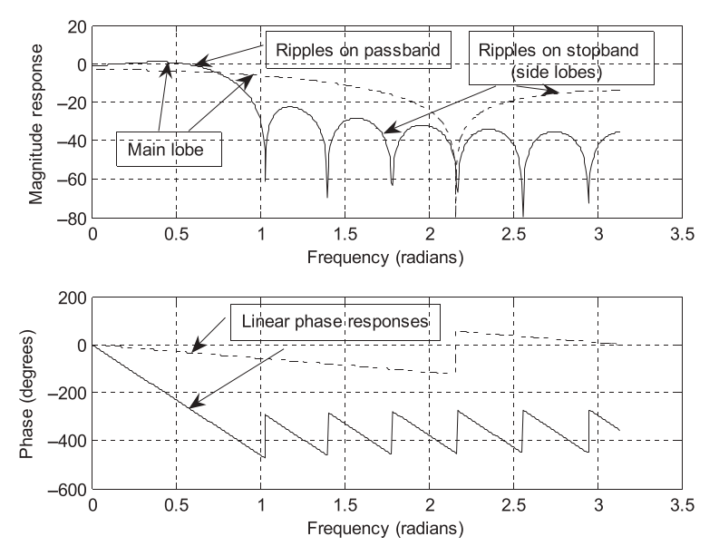
Observations:
- 3-tap filter:
- Wide transition band.
- Significant ripples in passband and stopband.
- 17-tap filter (\(M=8\)):
- Sharper transition.
- Still has ripples (Gibbs effect), but narrower transition band.
Trade-off: more taps ⇒ better frequency selectivity, but:
- More computations per sample.
- Larger delay (here, \(M=8\) samples).
Gibbs Effect – Why Ripples Appear
The passband and stopband ripples in ideal-based FIR design come from:
- Abrupt truncation of the infinite impulse response.
Analogy:
- Truncating a continuous-time sinc (multiplying by a rectangular window) produces ripples in frequency.
In our discrete-time design:
- Multiplying the ideal infinite \(h(n)\) by a finite-length rectangular window in time ⇒ convolution with sinc-like main/side lobes in frequency ⇒ ripples (Gibbs).
We will reduce these ripples by using smoother windows (Hanning, Hamming, Blackman, etc.) instead of the abrupt rectangular window.
Linear Phase and Waveform Preservation
Because the FIR coefficients are symmetric, the filter has linear phase:
\[ \angle H(e^{j\Omega}) \approx -M\Omega. \]
If input is a sinusoid \(x(n) = A \sin(\Omega n)\), the steady-state output is:
\[ y(n) = A |H(e^{j\Omega})| \sin\big(\Omega(n - M)\big). \]
- Same frequency.
- Same waveform shape.
- Only delayed by \(M\) samples and scaled in amplitude.
For a sum of sinusoids within the passband, all components get same delay ⇒ waveform shape is preserved ⇒ no phase distortion.
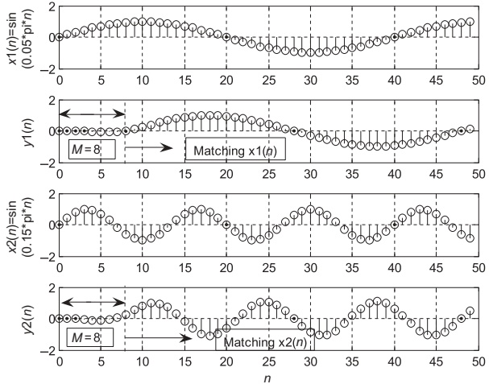
What if Phase Is Nonlinear?
Consider input (sum of two sinusoids):
\[ x(n) = \sin(0.05\pi n) u(n) - \frac{1}{3} \sin(0.15\pi n) u(n). \]
Linear phase filter (delay 8 samples):
\[ y_1(n) = \sin\big(0.05\pi(n-8)\big) - \frac{1}{3}\sin\big(0.15\pi(n-8)\big). \]
- Entire signal looks like delayed copy of \(x(n)\).
Nonlinear phase filter with \(90^\circ\) phase shift at both frequencies:
\[ y_2(n) = \sin(0.05\pi n - \pi/2) - \frac{1}{3} \sin(0.15\pi n - \pi/2). \]
- Delay depends on frequency (10 samples vs \(10/3\) samples).
- Waveform shape changes: phase distortion.
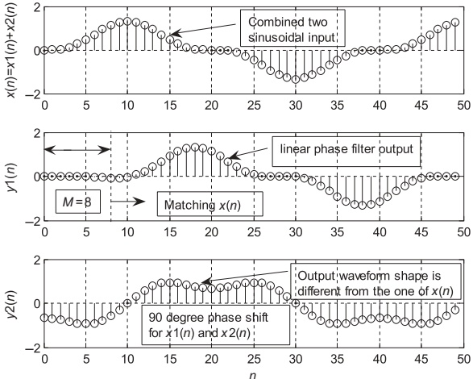
In audio: nonlinear phase can make transients smeared or “hollow” sounding ⇒ FIR linear-phase filters are desirable.
Example 7.3 – 5-Tap Bandpass Filter
Specs:
- \(f_L = 2000\) Hz, \(f_H = 2400\) Hz, \(f_s = 8000\) Hz.
- 5 taps ⇒ \(2M+1 = 5\) ⇒ \(M = 2\).
Normalized edges:
\[ \Omega_L = 2\pi \frac{2000}{8000} = 0.5\pi, \quad \Omega_H = 2\pi \frac{2400}{8000} = 0.6\pi. \]
Ideal bandpass impulse (noncausal):
\[ h(0) = \frac{\Omega_H - \Omega_L}{\pi} = 0.1. \]
\[ h(1) = \frac{\sin(0.6\pi)}{\pi} - \frac{\sin(0.5\pi)}{\pi} \approx -0.01558, \]
\[ h(2) = \frac{\sin(1.2\pi)}{2\pi} - \frac{\sin(\pi)}{2\pi} \approx -0.09355, \]
with symmetry:
\[ h(-1)=h(1),\quad h(-2)=h(2). \]
Shift by \(M=2\):
\[ b_0 = b_4 = -0.09355, \quad b_1 = b_3 = -0.01558, \quad b_2 = 0.1. \]
Transfer function:
\[ H(z) = -0.09355 - 0.01558 z^{-1} + 0.1 z^{-2} - 0.01558 z^{-3} - 0.09355 z^{-4}. \]
Example 7.3 – Observing Gibbs in Bandpass
MATLAB frequency response (Program 7.1) gives:
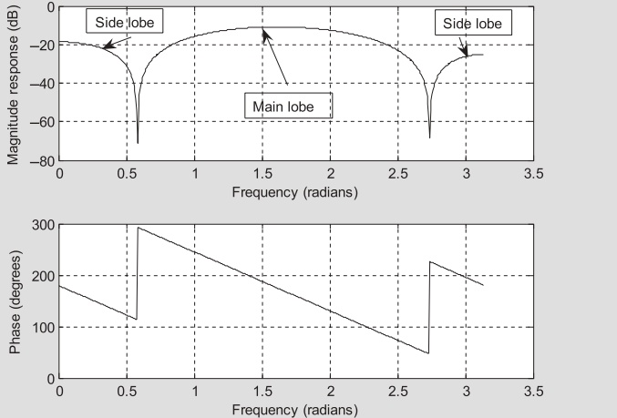
Observations:
- Passband peak is ~\(-10\) dB instead of 0 dB.
- Stopband side lobes swing between roughly -18 and -70 dB (lower) and -25 and -68 dB (upper).
- This is again Gibbs oscillation, due to abrupt truncation.
Fix: Window the impulse response instead of raw truncation.
7.3 Window Method – Motivation
We know:
- Truncating the ideal, infinite \(h(n)\) with a rectangular window (just cutting off) gives Gibbs ripples.
Idea:
- Replace sharp truncation with smoother weighting that tapers to zero at the ends.
Mathematically:
\[ h_w(n) = h(n)\, w(n), \]
where \(w(n)\) is a window function, nonzero for \(-M \le n \le M\), symmetric around 0.
Effect in frequency:
- Convolution of ideal response with window’s spectrum.
- Tapered windows reduce side lobes (ripples) but broaden main lobe (wider transition).
Common Window Functions
- Rectangular:
\[ w_{\text{rec}}(n) = 1,\quad -M \le n \le M. \]
- Triangular (Bartlett):
\[ w_{\text{tri}}(n) = 1 - \frac{|n|}{M},\quad -M \le n \le M. \]
- Hanning:
\[ w_{\text{han}}(n) = 0.5 + 0.5\cos\left(\frac{\pi n}{M}\right),\quad -M \le n \le M. \]
- Hamming:
\[ w_{\text{ham}}(n) = 0.54 + 0.46\cos\left(\frac{\pi n}{M}\right),\quad -M \le n \le M. \]
- Blackman:
\[ w_{\text{black}}(n) = 0.42 + 0.5\cos\left(\frac{\pi n}{M}\right) + 0.08\cos\left(\frac{2\pi n}{M}\right),\quad -M \le n \le M. \]
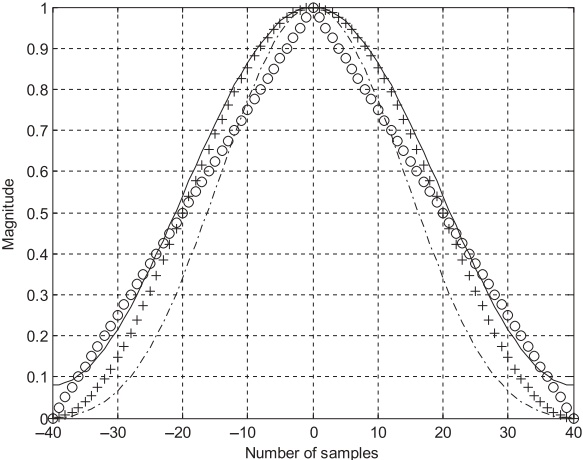
- Rectangular: abrupt edges.
- Others: smooth taper to zero at ends.
Example 7.4 – Applying Hamming Window to FIR Coefficients
Given noncausal symmetric coefficients (ideal lowpass):
\[ h(0)=0.25,\; h(\pm1)=0.22508,\; h(\pm2)=0.15915,\; h(\pm3)=0.07503. \]
Use Hamming window with \(M=3\):
Window values:
\[ \begin{aligned} w_{\text{ham}}(0) &= 0.54 + 0.46 \cos(0) = 1.0, \\ w_{\text{ham}}(\pm 1) &= 0.77, \\ w_{\text{ham}}(\pm 2) &= 0.31, \\ w_{\text{ham}}(\pm 3) &= 0.08. \end{aligned} \]
Windowed coefficients:
\[ \begin{aligned} h_w(0) &= 0.25 \times 1 = 0.25, \\ h_w(\pm1) &= 0.22508 \times 0.77 \approx 0.17331, \\ h_w(\pm2) &= 0.15915 \times 0.31 \approx 0.04934, \\ h_w(\pm3) &= 0.07503 \times 0.08 \approx 0.00600. \end{aligned} \]
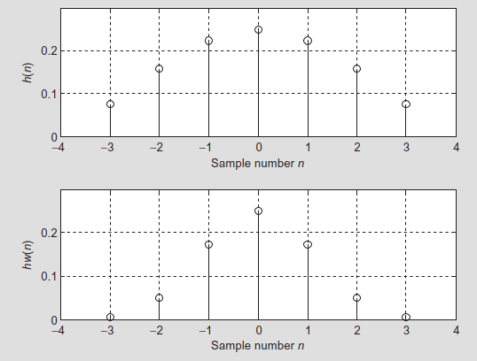
Observation: coefficients are smoothly tapered toward zero ⇒ reduced Gibbs ripples.
FIR Design via Windowing – 3-Step Recipe
Design ideal truncated impulse response \(h(n)\):
- Use formulas in Table 7.1.
- Choose filter type (lowpass, highpass, bandpass, bandstop).
- Choose \(M\) (length \(2M+1\)).
Apply window:
\[ h_w(n) = h(n)\, w(n),\quad -M \le n \le M. \]
- Choose \(w(n)\): rectangular, Hanning, Hamming, Blackman, etc.
Make it causal by shifting \(M\) samples:
\[ b_n = h_w(n - M),\quad n = 0, 1, \dots, 2M. \]
- Implement FIR with coefficients \(b_n\).
Example 7.5 – 3-Tap Lowpass with Hamming Window
Same spec as Example 7.2:
- \(f_c = 800\) Hz, \(f_s = 8000\) Hz ⇒ \(\Omega_c = 0.2\pi\).
- \(2M+1 = 3\) ⇒ \(M = 1\).
Ideal coefficients (from Example 7.2):
\[ h(0) = 0.2,\quad h(\pm1) = 0.1871. \]
Hamming window (for \(M=1\)):
\[ w_{\text{ham}}(0) = 1,\quad w_{\text{ham}}(\pm1) = 0.08. \]
Windowed noncausal coefficients:
\[ \begin{aligned} h_w(0) &= 0.2 \times 1 = 0.2, \\ h_w(\pm 1) &= 0.1871 \times 0.08 \approx 0.01497. \end{aligned} \]
Shift by \(M=1\):
\[ b_0 = b_2 = 0.01497,\quad b_1 = 0.2. \]
Transfer function:
\[ H(z) = 0.01497 + 0.2 z^{-1} + 0.01497 z^{-2}. \]
Example 7.5 – Frequency Response
Frequency response:
\[ H(e^{j\Omega}) = e^{-j\Omega}\big(0.2 + 0.02994\cos\Omega\big). \]
Magnitude:
\[ |H(e^{j\Omega})| = \big|0.2 + 0.02994\cos\Omega\big|. \]
Phase:
\[ \angle H(e^{j\Omega})= \begin{cases} -\Omega, & 0.2 + 0.02994\cos\Omega > 0, \\ -\Omega + \pi, & 0.2 + 0.02994\cos\Omega < 0. \end{cases} \]
Sample values (Table 7.4) show slightly reduced peak magnitude and less ripple compared to the unwindowed case.
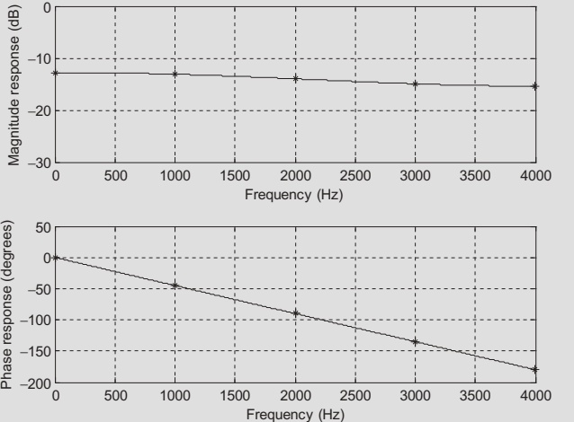
Example 7.6 – 5-Tap Bandstop with Hamming Window
Specs:
- Bandreject (notch) from 2000–2400 Hz.
- \(f_s = 8000\) Hz.
- 5 taps ⇒ \(M=2\).
Ideal bandstop \(h(n)\) (Table 7.1):
\[ h(0) = \frac{\pi - \Omega_H + \Omega_L}{\pi} = 0.9, \]
\[ h(1) \approx 0.01558, \quad h(2) \approx 0.09355, \quad h(-1)=h(1),\; h(-2)=h(2). \]
Hamming window (\(M=2\)):
\[ w_{\text{ham}}(0) = 1,\quad w_{\text{ham}}(\pm1)=0.54,\quad w_{\text{ham}}(\pm2)=0.08. \]
Windowed coefficients:
\[ \begin{aligned} h_w(0) &= 0.9, \\ h_w(\pm1) &= 0.01558\times0.54\approx0.00841, \\ h_w(\pm2) &= 0.09355\times0.08\approx0.00748. \end{aligned} \]
Shift by \(M=2\):
\[ b_0 = b_4 = 0.00748,\quad b_1 = b_3 = 0.00841,\quad b_2 = 0.9. \]
Transfer function:
\[ H(z) = 0.00748 + 0.00841 z^{-1} + 0.9 z^{-2} + 0.00841 z^{-3} + 0.00748 z^{-4}. \]
MATLAB Helper Function: firwd
For larger designs, we let MATLAB do the heavy lifting. Custom function:
N: number of taps (must be odd).Ftype:- 1 = lowpass
- 2 = highpass
- 3 = bandpass
- 4 = bandreject
WnL,WnH: lower and upper cutoff frequencies (in radians).- For lowpass: set
WnH = 0, useWnL = Ω_c. - For highpass: set
WnL = 0, useWnH = Ω_c.
- For lowpass: set
Wtype:- 1 = rectangular
- 2 = triangular
- 3 = Hanning
- 4 = Hamming
- 5 = Blackman
This function internally:
- Generates ideal \(h(n)\) using formulas like Table 7.1.
- Multiplies by chosen window \(w(n)\).
- Shifts to produce causal coefficients \(B\).
Example 7.7 – 25-Tap Lowpass: Rectangular vs Hamming
Specs:
- Lowpass, \(f_c = 2000\) Hz, \(f_s = 8000\) Hz.
- 25 taps ⇒ \(M=12\).
- \(\Omega_c = 0.5\pi\).
Use firwd twice:
- Rectangular window (Wtype=1).
- Hamming window (Wtype=4).
Magnitude responses:
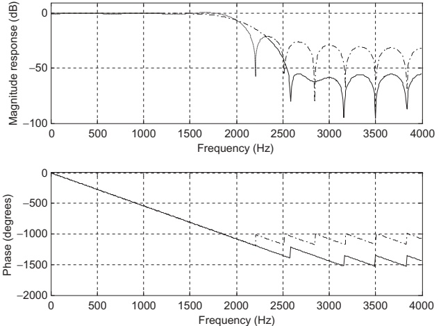
Observations:
- Rectangular: narrower transition but higher side lobes (~-21 dB).
- Hamming: slightly wider transition but lower side lobes (~-53 dB).
Coefficients listed in Table 7.6.
Comparing Hanning, Hamming, Blackman
For the same lowpass spec (25 taps, \(f_c=2000\) Hz):
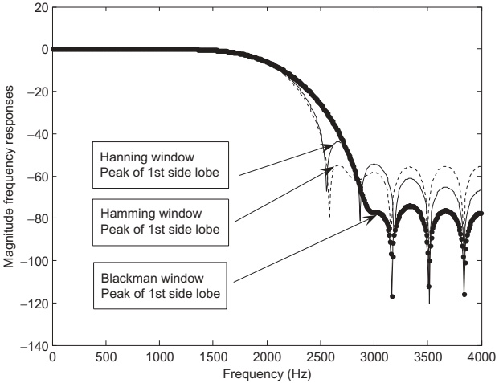
Qualitative summary:
- Hanning: medium main-lobe width, moderate side lobes (~-44 dB).
- Hamming: similar main-lobe width, lower side lobes (~-53 dB).
- Blackman: wider main lobe, very low side lobes (~-74 dB).
Trade-off:
- Better stopband attenuation ⇒ more main-lobe widening (worse transition).
Window Performance and Length Estimation (Table 7.7)
For normalized transition width
\[ \Delta f = \frac{|f_{\text{stop}} - f_{\text{pass}}|}{f_s}, \]
approximate length for each window:
| Window | \(w(n)\) | Length \(N\) | Passband Ripple (dB) | Stopband Atten (dB) |
|---|---|---|---|---|
| Rectangular | \(1\) | \(N \approx \dfrac{0.9}{\Delta f}\) | 0.7416 | 21 |
| Hanning | \(0.5+0.5\cos(\pi n/M)\) | \(N \approx \dfrac{3.1}{\Delta f}\) | 0.0546 | 44 |
| Hamming | \(0.54+0.46\cos(\pi n/M)\) | \(N \approx \dfrac{3.3}{\Delta f}\) | 0.0194 | 53 |
| Blackman | \(0.42+0.5\cos(\pi n/M)+0.08\cos(2\pi n/M)\) | \(N \approx \dfrac{5.5}{\Delta f}\) | 0.0017 | 74 |
Design cutoff frequency:
\[ f_c = \frac{f_{\text{pass}} + f_{\text{stop}}}{2}. \]
Tip
Design recipe from specs:
- From desired passband ripple and stopband attenuation, pick a window.
- Compute \(\Delta f\) from the band edges.
- Use table formula to estimate \(N\), then round up to next odd integer.
- Compute \(f_c\) (lowpass/highpass) or \(f_L, f_H\) (band filters).
- Use Fourier + window method (or
firwd) to get coefficients.
Example 7.8 – Lowpass Length from Specs
Specs:
- Passband: 0–1850 Hz.
- Stopband: 2150–4000 Hz.
- Stopband attenuation: 20 dB.
- Passband ripple: 1 dB.
- \(f_s = 8000\) Hz.
Compute normalized transition width:
\[ \Delta f = \frac{|2150 - 1850|}{8000} = 0.0375. \]
Window choice:
- Rectangular gives ~0.74 dB ripple and 21 dB stopband attenuation ⇒ meets the requirements (1 dB ripple, 20 dB attenuation).
Length estimate:
\[ N = \frac{0.9}{\Delta f} = \frac{0.9}{0.0375} \approx 24. \]
Take odd \(N=25\).
Design cutoff frequency:
\[ f_c = \frac{1850 + 2150}{2} = 2000 \; \text{Hz}. \]
This is exactly the lowpass designed in Example 7.7.
Example 7.8 – Effect on Speech
Apply this lowpass FIR to speech sampled at 8 kHz:
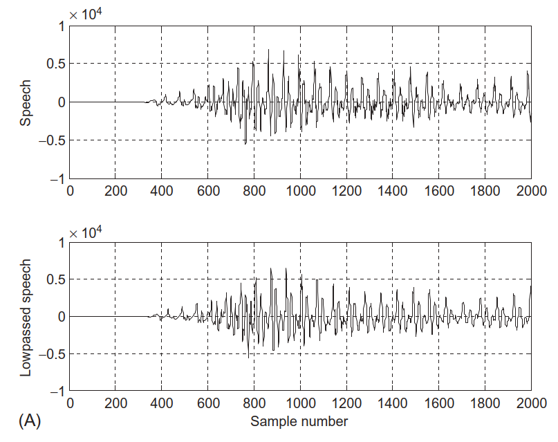
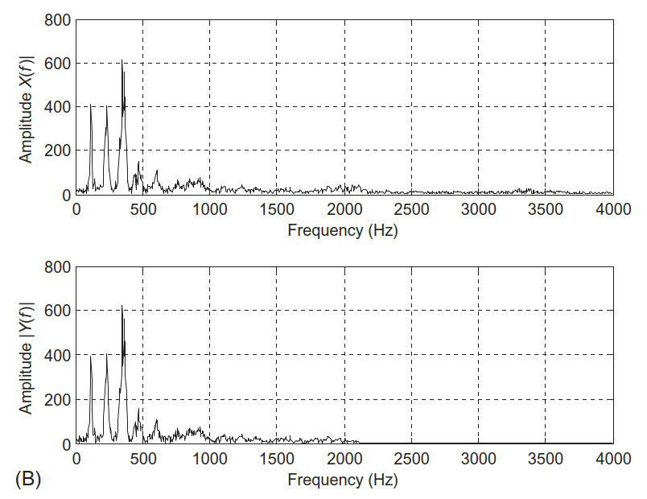
Perceptually:
- Filtered speech sounds “muffled” because we removed higher harmonics and fricative energy.
Example 7.9 – Highpass Filter from Specs
Specs:
- Stopband: 0–1500 Hz.
- Passband: 2500–4000 Hz.
- Stopband attenuation: 40 dB.
- Passband ripple: 0.1 dB.
- \(f_s = 8000\) Hz.
Transition width:
\[ \Delta f = \frac{|2500 - 1500|}{8000} = 0.125. \]
From Table 7.7:
- Need stopband ∼ 40 dB and small ripple ⇒ Hanning (≈44 dB, 0.0546 dB ripple) is acceptable.
Length estimate:
\[ N = \frac{3.1}{0.125} = 24.8 \Rightarrow N=25. \]
Cutoff frequency:
\[ f_c = \frac{1500+2500}{2} = 2000 \; \text{Hz}, \quad \Omega_c = 0.5\pi. \]
Use firwd(25, 2, 0, 0.5*pi, 3) to generate highpass coefficients.
Example 7.9 – Effect on Speech
Frequency response:
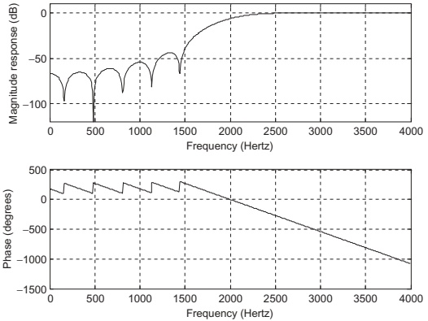
Apply to speech:
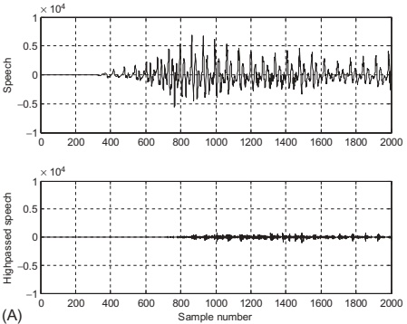
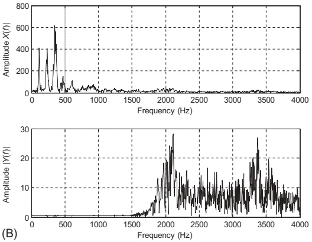
Perceptually:
- Speech sounds “crisp” or “thin”, emphasizing sibilants and consonant noise.
Example 7.10 – Bandpass Design from Specs
Specs:
- Lower stopband: 0–500 Hz.
- Passband: 1600–2300 Hz.
- Upper stopband: 3500–4000 Hz.
- Stopband attenuation: 50 dB.
- Passband ripple: 0.05 dB.
- \(f_s = 8000\) Hz.
Compute transition widths:
\[ \Delta f_1 = \frac{1600-500}{8000} = 0.1375, \quad \Delta f_2 = \frac{3500-2300}{8000} = 0.15. \]
Using Hamming window (≈53 dB stopband, 0.0194 dB ripple):
\[ N_1 = \frac{3.3}{0.1375} \approx 24,\quad N_2 = \frac{3.3}{0.15} \approx 22. \]
Choose \(N=25\).
Cutoff frequencies for ideal bandpass:
\[ f_L = \frac{1600+500}{2} = 1050\; \text{Hz},\quad f_H = \frac{3500+2300}{2} = 2900\; \text{Hz}. \]
Normalized:
\[ \Omega_L = 0.2625\pi,\quad \Omega_H = 0.725\pi. \]
Use firwd(25, 3, Ω_L, Ω_H, 4) to generate Hamming-windowed bandpass FIR.
Example 7.10 – Bandpass on Speech
Frequency response:
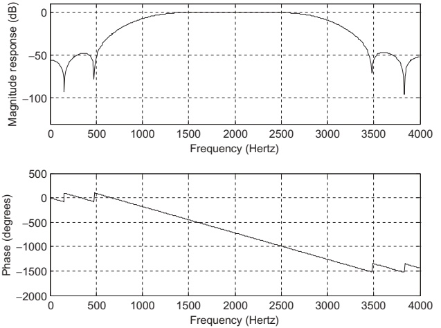
Coefficients in Table 7.9.
Filtering speech:
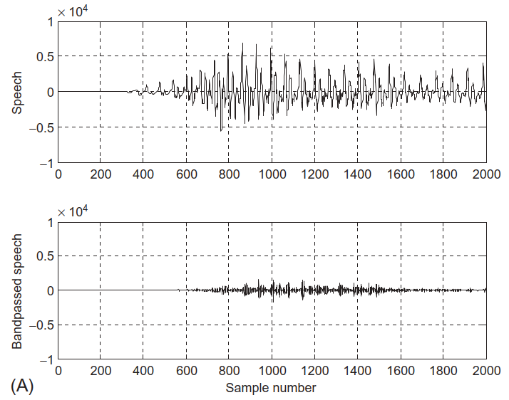
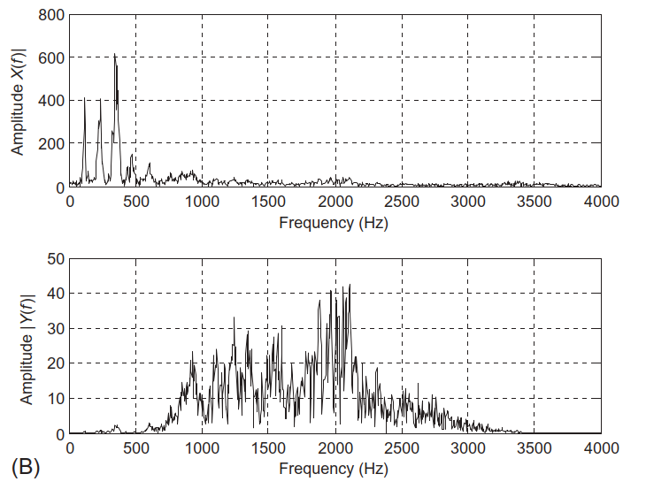
Example 7.11 – Bandstop Design from Specs
Specs:
- Lower cutoff: 1250 Hz.
- Lower transition width: 1500 Hz.
- Upper cutoff: 2850 Hz.
- Upper transition width: 1300 Hz.
- Stopband attenuation: 60 dB.
- Passband ripple: 0.02 dB.
- \(f_s = 8000\) Hz.
Transition widths:
\[ \Delta f_1 = \frac{1500}{8000} = 0.1875,\quad \Delta f_2 = \frac{1300}{8000} = 0.1625. \]
Need ≈60 dB attenuation ⇒ Blackman window (~74 dB).
Lengths:
\[ N_1 = \frac{5.5}{0.1875} \approx 29.3,\quad N_2 = \frac{5.5}{0.1625} \approx 33.8. \]
Choose odd \(N=35\).
Cutoff frequencies:
\[ \Omega_L = 2\pi\frac{1250}{8000} = 0.3125\pi,\quad \Omega_H = 2\pi\frac{2850}{8000} = 0.7125\pi. \]
Use firwd(35, 4, Ω_L, Ω_H, 5) to get bandstop FIR.
Example 7.11 – Bandstop on Speech
Frequency response:
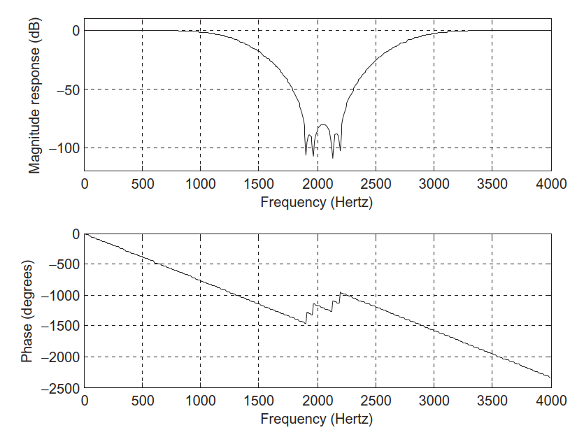
Coefficients in Table 7.10.
Filtering speech:
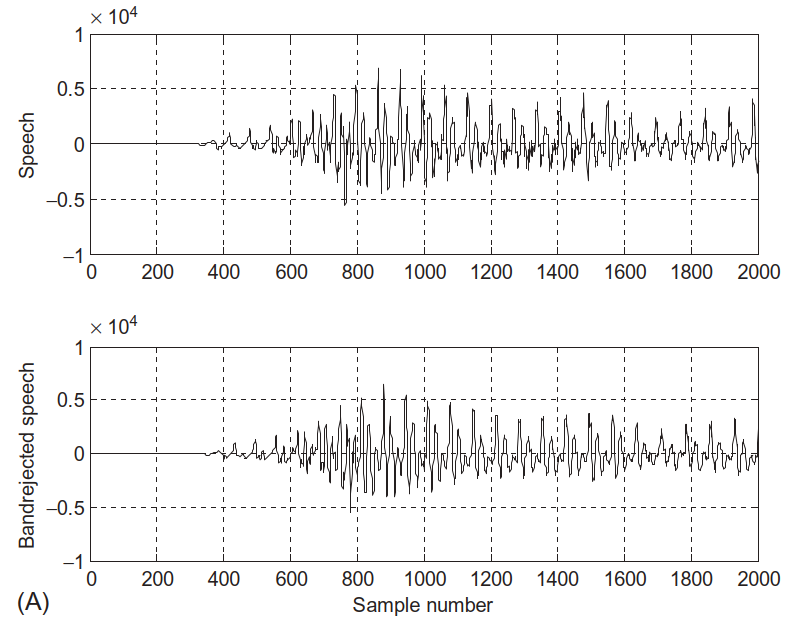
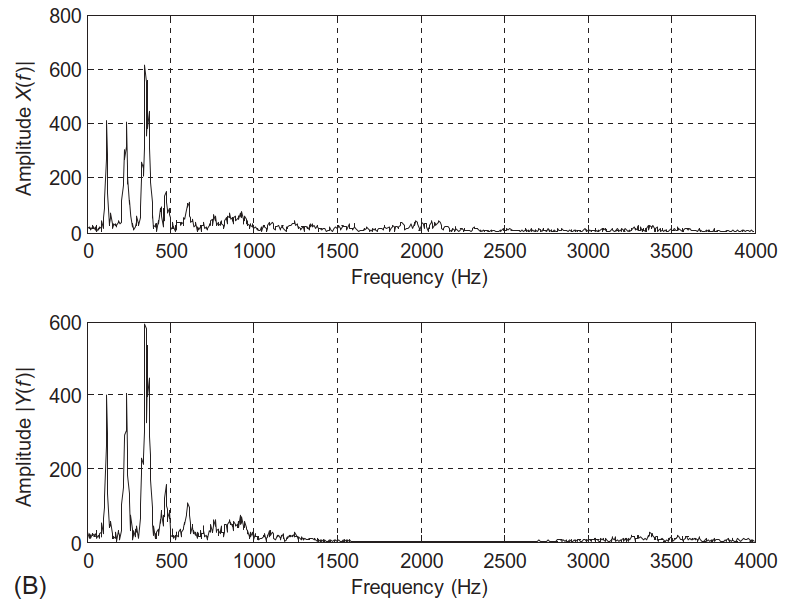
Use case: removing a narrowband interference (like a whistle) from speech.
In-Class Practice – Designing a Simple FIR
Problem:
Design a 7-tap lowpass FIR filter (\(N=7\), so \(M=3\)) with:
- \(f_c = 1000\) Hz, \(f_s = 8000\) Hz.
- Use the Hanning window.
Tasks:
- Compute \(\Omega_c\).
- Use Table 7.1 to compute noncausal ideal \(h(n)\), \(-3 \le n \le 3\).
- Compute Hanning window \(w_{\text{han}}(n)\), \(-3 \le n \le 3\).
- Compute \(h_w(n) = h(n) w(n)\).
- Shift by \(M=3\) to find causal \(b_0,\dots,b_6\).
Key Takeaways – Conceptual
- FIR format:
- \(y(n) = \sum b_i x(n-i)\),
- \(H(z) = \sum b_i z^{-i}\).
- Always BIBO stable, easy to implement as tap delay line.
- Fourier design method:
- Start from ideal frequency response \(H_d(e^{j\Omega})\).
- Use inverse DTFT to find ideal \(h_d(n)\).
- Truncate and shift to get practical FIR.
- Gibbs effect:
- Abrupt truncation (rectangular window) causes ripples in passband/stopband.
- Linear phase:
- Symmetric FIR coefficients (odd length) ⇒ \(\angle H(e^{j\Omega})\) is linear in \(\Omega\).
- All passband components delayed by same number of samples ⇒ no phase distortion.
Key Takeaways – Window Method and Design Rules
Window method:
- \(h_w(n) = h_d(n)\, w(n)\).
- Smoother windows (Hanning, Hamming, Blackman) reduce ripple (side lobes) but enlarge transition width (main lobe).
Window choices (rough performance):
- Rectangular: short \(N\), poor attenuation (~21 dB).
- Hanning: moderate \(N\), ~44 dB attenuation.
- Hamming: moderate \(N\), ~53 dB attenuation (good general choice).
- Blackman: long \(N\), ~74 dB attenuation (for tight specs).
Filter length from specs:
- Compute normalized transition width \(\Delta f\).
- Choose window based on required ripple & attenuation.
- Use table: \(N \approx \text{constant}/\Delta f\).
- Make \(N\) odd for symmetric, linear-phase FIR.
Real-world ECE:
- Designed filters applied to speech to control timbre and remove noise.
- Same ideas apply to OFDM subcarrier shaping, channel equalization, biomedical signal filtering, etc.
Formula Summary
FIR structure:
\[ y(n) = \sum_{i=0}^{K} b_i x(n-i),\quad H(z) = \sum_{i=0}^{K} b_i z^{-i}. \]
Frequency response (DTFT of impulse response):
\[ H(e^{j\Omega}) = \sum_{n=-\infty}^{\infty} h(n) e^{-jn\Omega}. \]
Inverse DTFT (design equation):
\[ h(n) = \frac{1}{2\pi}\int_{-\pi}^{\pi} H(e^{j\Omega}) e^{jn\Omega} \, d\Omega. \]
Ideal lowpass impulse response:
\[ h(n) = \begin{cases} \frac{\Omega_c}{\pi}, & n=0, \\ \frac{\sin(\Omega_c n)}{\pi n}, & n\neq 0. \end{cases} \]
Other ideal FIRs (noncausal):
Lowpass:
\[ h(n) = \frac{\Omega_c}{\pi} \text{ for } n=0;\quad h(n) = \frac{\sin(\Omega_c n)}{n\pi} \text{ for } n\neq 0. \]
Highpass:
\[ h(0) = \frac{\pi - \Omega_c}{\pi};\quad h(n) = -\frac{\sin(\Omega_c n)}{n\pi},\; n\neq 0. \]
Bandpass:
\[ h(0) = \frac{\Omega_H - \Omega_L}{\pi};\quad h(n) = \frac{\sin(\Omega_H n)}{n\pi} - \frac{\sin(\Omega_L n)}{n\pi},\; n\neq 0. \]
Bandstop:
\[ h(0) = \frac{\pi - \Omega_H + \Omega_L}{\pi};\quad h(n) = -\frac{\sin(\Omega_H n)}{n\pi} + \frac{\sin(\Omega_L n)}{n\pi},\; n\neq 0. \]
Windowing:
\[ h_w(n) = h(n) w(n),\quad -M \le n \le M. \]
Causal coefficients:
\[ b_n = h_w(n-M),\quad n=0,1,\dots,2M. \]
Linear phase (symmetric FIR, odd length):
\[ \angle H(e^{j\Omega}) = -M\Omega \; (+ \text{optional } \pi \text{ jumps}). \]
Transition width and length (example for Hamming):
\[ \Delta f = \frac{|f_{\text{stop}} - f_{\text{pass}}|}{f_s},\quad N \approx \frac{3.3}{\Delta f}. \]
\[ f_c = \frac{f_{\text{pass}} + f_{\text{stop}}}{2}. \]
FIR Filter Design – Interactive Deck
How to Use This Interactive Deck
- All code runs in your browser using Pyodide (Python in WebAssembly).
- You can:
- Edit and run Python code (
{pyodide}blocks). - Use sliders and controls (
{ojs}blocks) to change parameters. - See FIR impulse and frequency responses update live with Plotly.
- Edit and run Python code (
Try to:
- Change cutoff frequencies.
- Change filter length (N).
- Change window type.
- Observe the effects on ripples, transition width, and phase.
Warm-Up: Evaluate a Simple FIR Filter in Python
Task: Change the coefficients and input samples and re-run the code.
Try:
- Change
bto[1/3, 1/3, 1/3]→ moving average lowpass. - Change
xto a step:[0, 0, 1, 1, 1, 1].
Interactive: Impulse Response of an Ideal Lowpass (Analytical)
We know the ideal lowpass impulse response is
\[ h(n) = \begin{cases} \Omega_c / \pi, & n = 0, \\ \sin(\Omega_c n) / (\pi n), & n \neq 0. \end{cases} \]
Use the sliders to see how \(\Omega_c\) and truncation index \(M\) affect \(h(n)\).
Interactive: From Ideal Noncausal \(h(n)\) to Causal \(b_n\)
We shift the impulse response by \(M\) samples to get a causal FIR:
\[ b_n = h(n - M), \quad n = 0,\dots,2M. \]
Interactively see the effect of the shift.
Interactive: Magnitude Response of an Ideal-Truncated Lowpass
Now we compute the DTFT of truncated \(h(n)\) and plot \(|H(e^{j\Omega})|\).
Explore:
- Increase \(M\) ⇒ transition narrows, side lobes get closer together.
- Observe Gibbs ripples near the cutoff.
Interactive: Add a Window – Compare Rectangular vs Hamming
We now apply a window to \(h(n)\):
\[ h_w(n) = h(n) w(n). \]
Compare rectangular and Hamming windows.
Observe:
- Rectangular: sharper transition, higher side lobes.
- Hamming: slightly wider main lobe, much lower side lobes.
Interactive: Window Choices – Hanning vs Hamming vs Blackman
Play with different windows and see main-lobe / side-lobe trade-offs.
viewof oc4 = Inputs.range([0.1, 0.9], {step: 0.05, label: "Normalized cutoff Ω_c / π"})
viewof M4 = Inputs.range([10, 80], {step: 2, label: "M (half-length)"} )
viewof wmulti = Inputs.checkbox(
["Rectangular", "Hanning", "Hamming", "Blackman"],
{label: "Windows to plot", value: ["Rectangular", "Hanning", "Hamming", "Blackman"]}
)Try:
- Compare Blackman vs Hamming: note much lower side lobes but wider transition.
- Turn windows on/off to see differences clearly.
Interactive: Length Estimation from Specs (Table 7.7)
Use the rules of thumb to estimate \(N\) from transition width \(\Delta f\).
Experiment:
- Narrower (f) ⇒ larger (N).
- Different windows need different lengths to achieve similar transition widths.
Interactive: Build a Lowpass Filter to Spec (Full Workflow)
Let’s approximate a lowpass design with:
- Passband edge \(f_{pass}\).
- Stopband edge \(f_{stop}\).
- Sampling rate \(f_s = 8000\) Hz (fixed).
- Choose window type.
viewof fpass = Inputs.range([500, 3500], {step: 100, label: "Passband edge f_pass (Hz)", value: 1800})
viewof fstop = Inputs.range([600, 3900], {step: 100, label: "Stopband edge f_stop (Hz)", value: 2200})
viewof wdesign = Inputs.select(
["Rectangular", "Hanning", "Hamming", "Blackman"],
{label: "Window type", value: "Hamming"}
)Challenge:
- Try to match the spec from Example 7.8 (0–1850 Hz passband, 2150–4000 Hz stopband).
- Compare your chosen window and N to the textbook’s.
Interactive: Time-Domain Filtering of a Sinusoid Sum
Test the linear phase property of a symmetric FIR on a sum of sinusoids.
viewof f1 = Inputs.range([200, 1500], {step: 50, label: "Sinusoid 1 frequency f1 (Hz)", value: 400})
viewof f2 = Inputs.range([500, 3000], {step: 50, label: "Sinusoid 2 frequency f2 (Hz)", value: 1200})
viewof Nd = Inputs.range([5, 41], {step: 2, label: "Filter length N (odd)", value: 17})
viewof ocd = Inputs.range([0.1, 0.9], {step: 0.05, label: "Normalized cutoff Ω_c / π for lowpass", value: 0.4})Explore:
- Adjust \(f_1\) and \(f_2\) to be both below cutoff, both above, or one below and one above.
- Watch how the waveform shape and delay change.
Summary & Next Steps
In this interactive deck you:
- Implemented FIR filtering in Python.
- Built ideal lowpass impulse responses and made them causal.
- Visualized the Gibbs effect with finite-length truncation.
- Applied different windows and saw main-lobe / side-lobe trade-offs.
- Used spec-based formulas to estimate FIR length and design complete filters.
- Observed linear-phase behavior in the time domain.
Suggested follow-ups:
- Extend these examples to highpass, bandpass, and bandstop designs.
- Replace sinusoids with real speech or music clips and listen to the effect (in a full Python or MATLAB environment).
- Explore automated design functions (
firwinin SciPy,fir1in MATLAB) and compare with your manual designs.